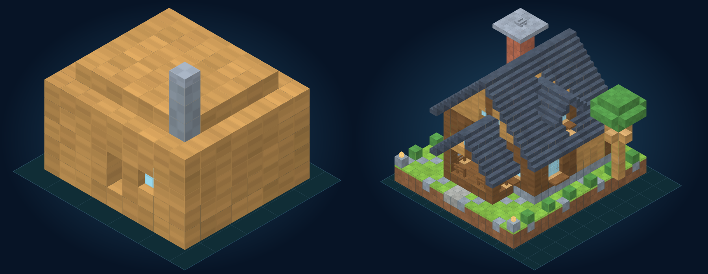
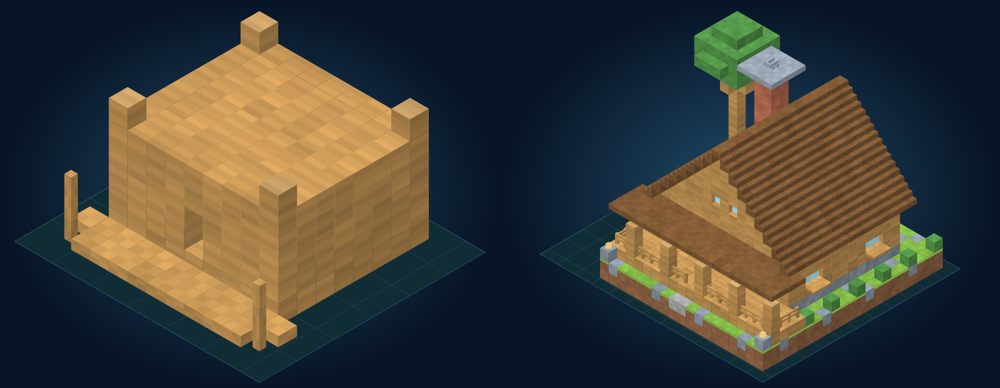
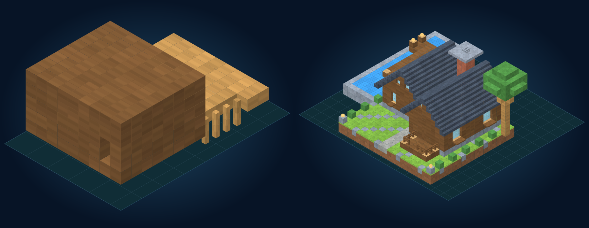
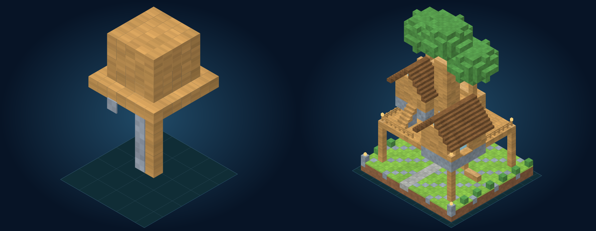
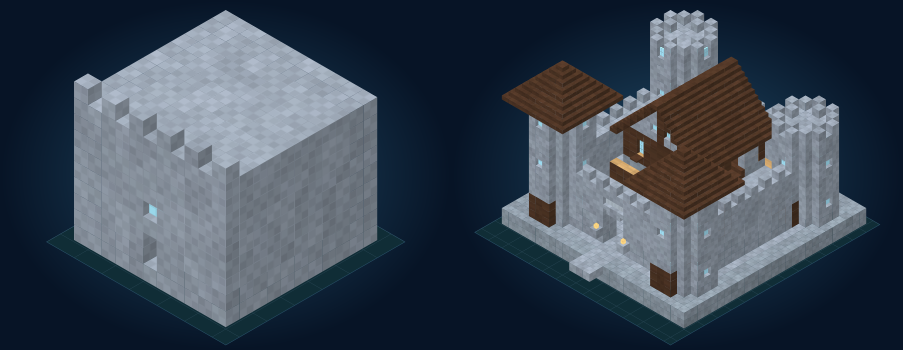
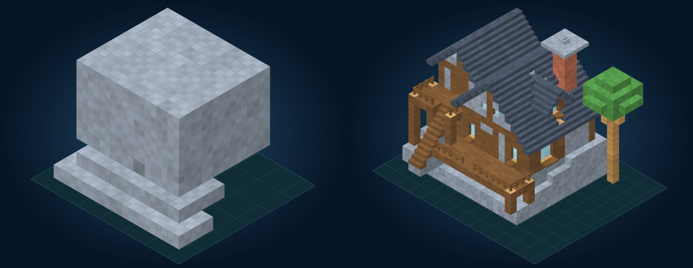
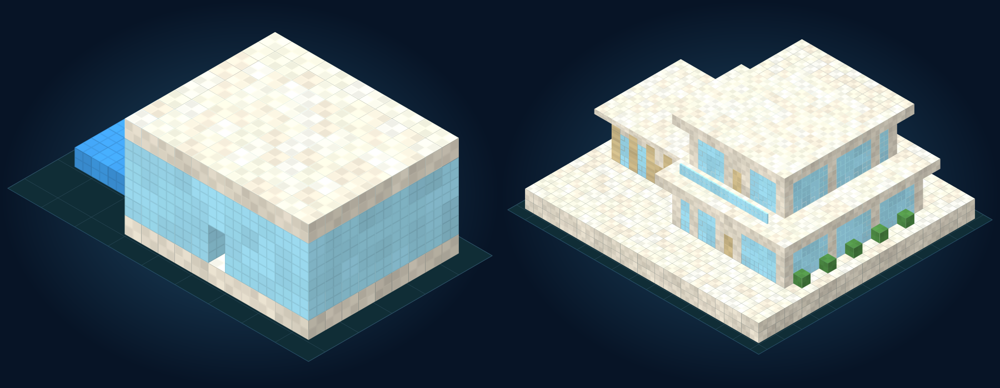

Catalog 1–25 · Catalog 26–50 · Running desktop renderer · Mobile interior inspection
Original generator 1 plans captured at commit 22b584d. Generator 2 previews use the actual canonical cells and block states. Both images are fitted independently to show architectural detail. Procedural textures; no concept art. Java Edition 1.21.1. Live Minecraft placement remains unverified: no compatible local server was available.

279 → 2006 operations · 23 materials · 532 oriented/property-bearing cells · fingerprint 971a8297

264 → 2693 operations · 20 materials · 747 oriented/property-bearing cells · fingerprint c743c621

297 → 2790 operations · 24 materials · 826 oriented/property-bearing cells · fingerprint 37399946

149 → 2856 operations · 19 materials · 1319 oriented/property-bearing cells · fingerprint c2d70330

528 → 5780 operations · 15 materials · 775 oriented/property-bearing cells · fingerprint 7cc23b46

375 → 2912 operations · 22 materials · 717 oriented/property-bearing cells · fingerprint ffdd6b79

488 → 3656 operations · 19 materials · 194 oriented/property-bearing cells · fingerprint 1216c832